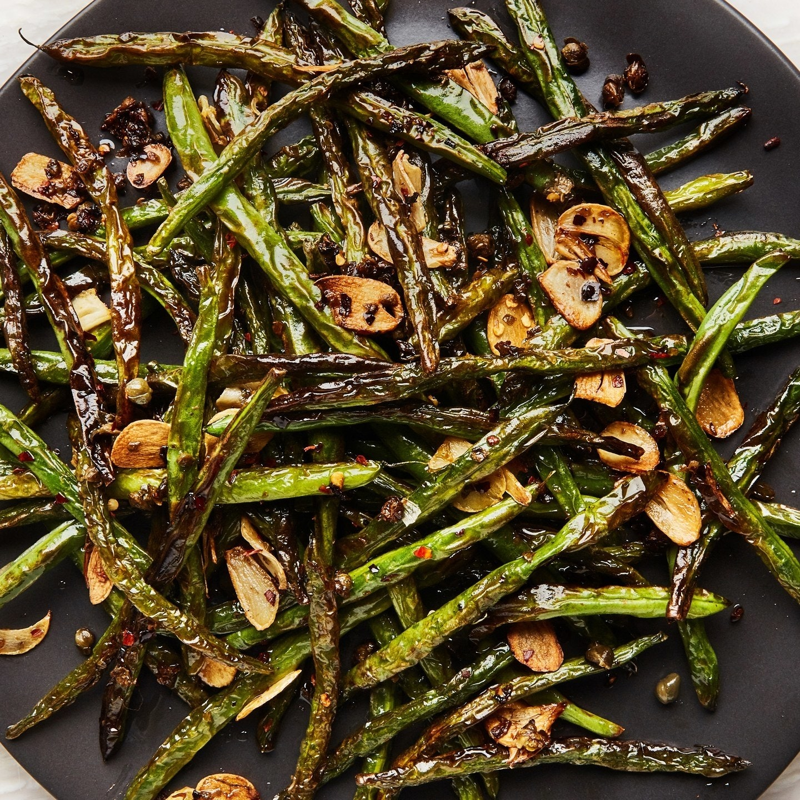
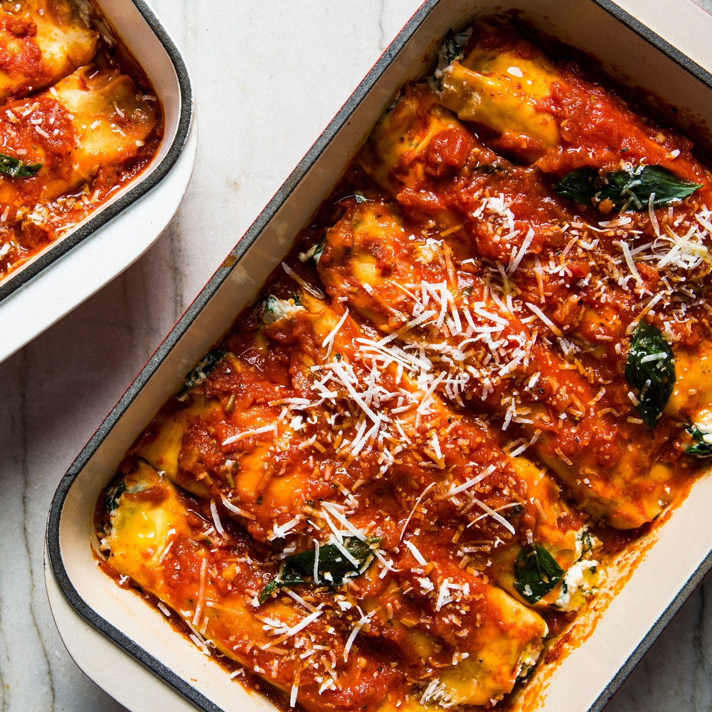
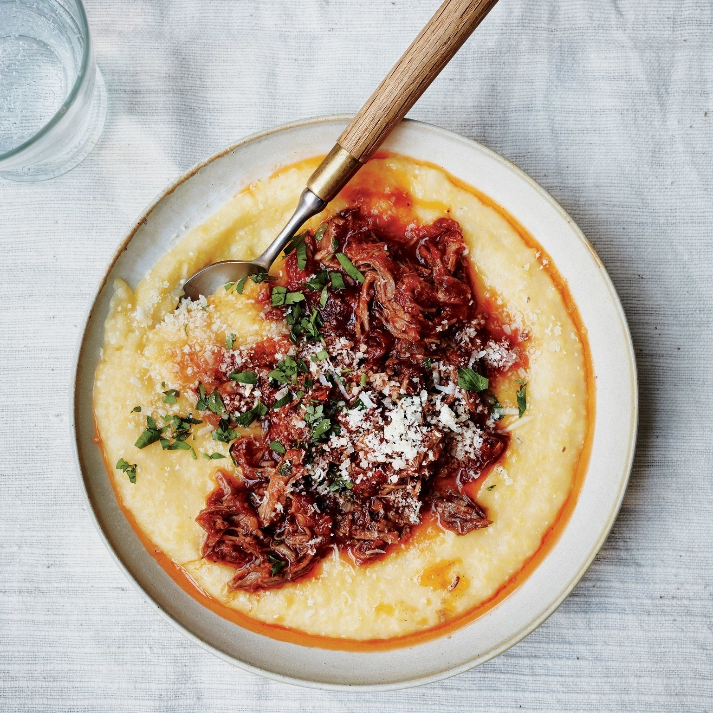
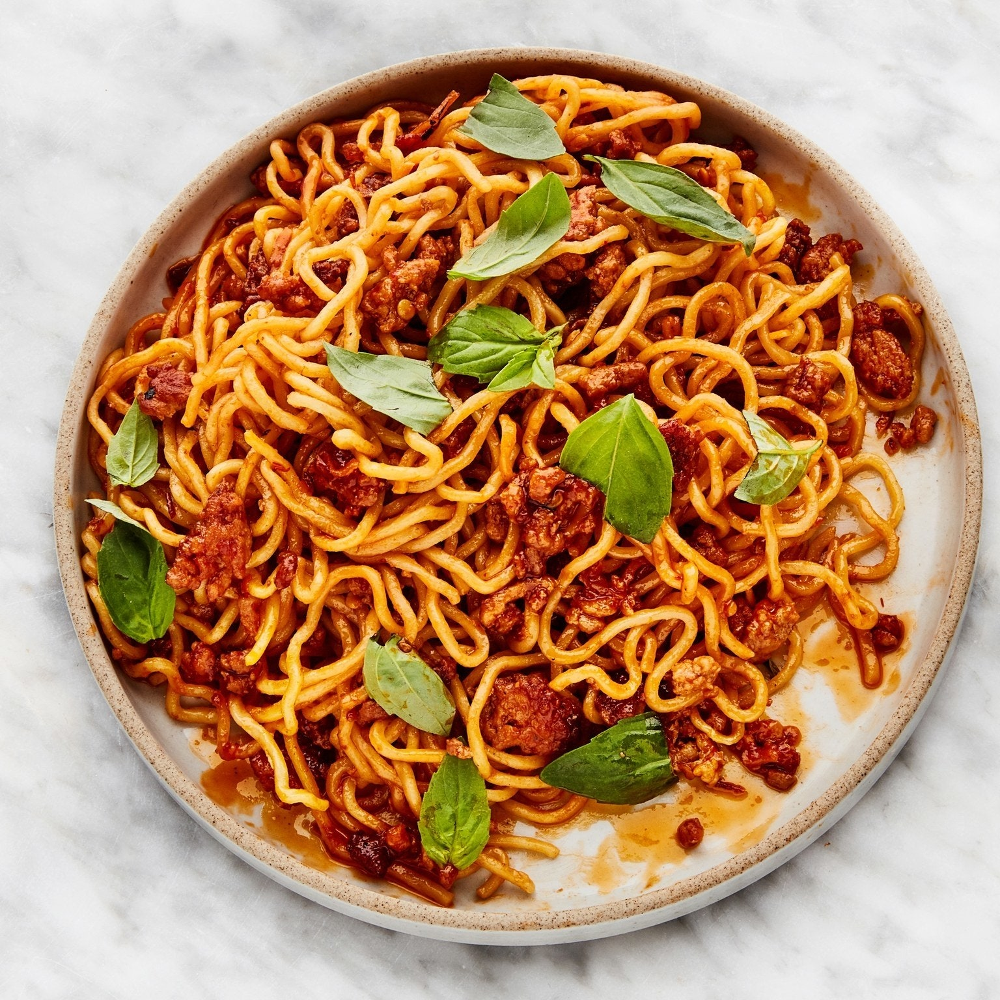

In this uncertain time, there’s one thing we know for sure: cooking is one way we can bring some order—and importantly, a sense of pleasure—into our lives. Whether you’ve got a glut of time on your hands or barely enough hours in the day to throw together lunch, have a pantry full of beans that you don’t know what to do with or a freezer ready to fill, we’ve got you covered with recipes, tips, and more. We’re here with you, and we’re here for you.

What if you could grocery shop without a mile-long list? In these simple recipes, that dream comes true. Not one requires more than 5 ingredients—salt, pepper, sugar, and a cooking fat excluded!—which means you can literally count your grocery list on one hand. From crispy fish to roast chicken, pantry pastas to savory veggie sides, here’s to delicious, unfussy cooking.
Get the recipes

There are some days that you get on a roll with cooking and have more food than you know what to do with. When you're feeling particularly motivated, make big batches of recipes that freeze well, and stow away leftovers for when you need to take a break. These soups, stews, lasagna, empanadas, pie dough—and much more—are some of our favorites to freeze.
Get the recipes

When you’re fending off the feels (you *know* the ones), the only thing that’s really proven to help is lots and lots of comfort food. (Okay fine, a pile of blankets does wonders, too.) We’re talking rich, aromatic chicken tikka masala over rice, fall-apart-y cabbage as inviting as a cashmere sweater, soups so soothing it warms your soul as much as your belly—and oh, tons of carbs. This is not the time to pretend like you want to eat a bright, zingy salad. You don’t. The heart knows what it wants, so do yourself a favor, and get cooking.
Get the recipes

We love cooking! But that doesn’t mean we always have the time (or...energy) to cook every single meal every single day. That’s when we turn to the recipes that are not only delicious right after serving, but also as leftovers a day (or three, or four) later. Think stews that get better with age, roasted salmon that’s just as satisfying right out of the fridge, and lentils that won’t mind another day in their marinade. These leftover recipes aren’t just about dinner tonight, but the meals we can actually look forward to again—and again.
Get the recipies!